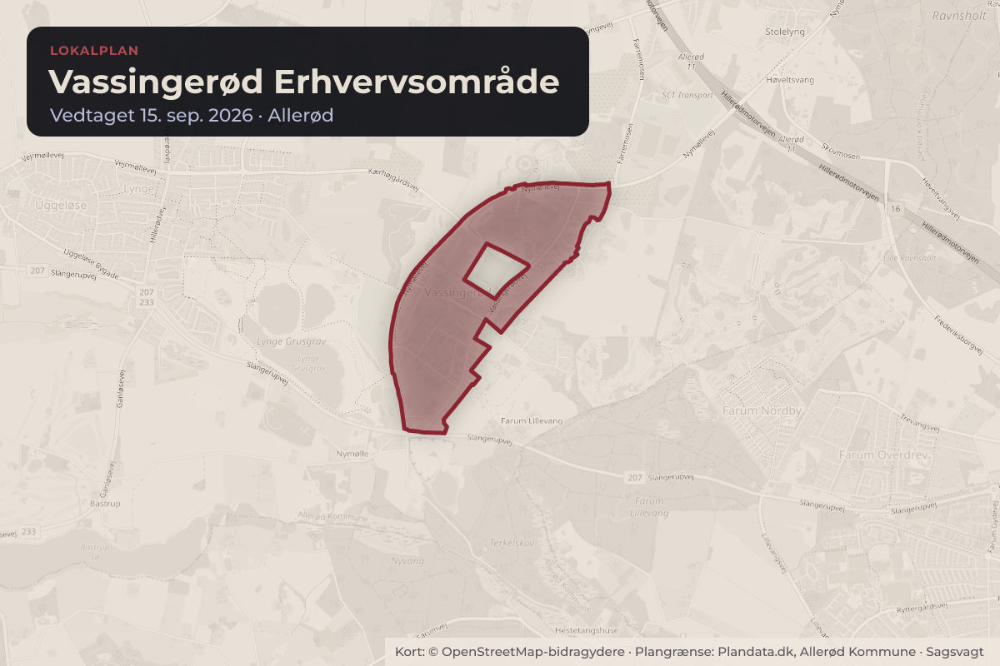
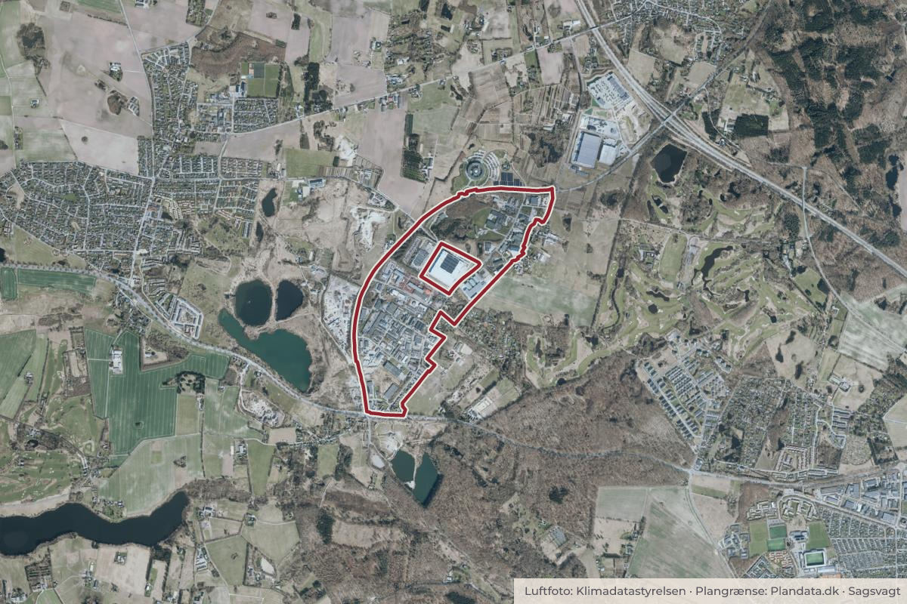

Besluttet 8. september, Økonomiudvalget, Allerød
Endelig vedtagelse af lokalplan for Vassingerød Erhvervsområde
Byggeri og lokalplanerErhverv og job

Kort: © OpenStreetMap-bidragydere. Plangrænse: Plandata.dk, Allerød Kommune.

Kort fortalt
- Hvem
- Økonomiudvalget, Allerød Kommune
- Hvornår
- Tirsdag 8. september 2026
- Status
- Besluttet. Økonomiudvalget indstiller til byrådet, at forslag til lokalplan 3-398 vedtages til offentliggørelse med de nævnte ændringer.
Er noget forkert her? Skriv til os
Læs hele sagen Kommunens egen tekst
Sagsfremstilling
Baggrunden for den fornyede høringsperiode var et veto fra Plan- og Landdistriktsstyrelsen
mod dele af indholdet i lokalplanen. Indsigelsen (vetoet) blev indsendt i den første
høringsperiode, der løb fra d. 18. marts til d. 13. maj 2026.
Indholdet blev tilrettet i dialog med styrelsen, og byrådet besluttede derefter d. 2. juli 2026 at
sende lokalplanforslaget i fornyet høring i 4 uger med de aftalte rettelser, mens
kommuneplantillægget blev endeligt vedtaget med en mindre, uddybende tilføjelse.
Lokalplanforslaget har nu været i fornyet høring i 4 uger fra d. 3. juli til d. 31. juli 2026, hvor der
er indkommet 1 høringssvar. Udover høringssvaret fra Plan- og Landdistriktsstyrelsen, der blev
behandlet i forbindelse med den fornyede høring, indkom der i den første høringsperiode 8
høringssvar, hvoraf de 7 omhandler lokalplanen.
Høringssvarene fremgår af bilag 1, og et høringsnotat med forvaltningens bemærkninger og
ændringsforslag fremgår af bilag 2.
De 8 høringssvar vedrører følgende emner:
Naturforhold i området, herunder
Delområde 5, nord (naturområde). Baggrund for udtagning af delområdet i nord
samt om det er muligt at indlemme hele matr.nr. 2ae i delområdet i syd
Baggrund for vurderingen af områdets naturforhold og biodiversitet, herunder at
søerne i området er i dårlig økologisk tilstand
Håndtering af § 3 søers beskyttelse ved ændret arealudlæg samt sikring af den
principielle sammenhæng i forhold til flora- og faunapassagen
Beplantningsbælte, forlængelse, så boligområdet Bøgevangen bliver bedre
afskærmet for industriområdet
Trafikale forhold – opfordring til at den sydlige del af Vassingerødvej lukkes for
gennemkørsel, jf. mulighed i lokalplanen samt spørgsmål til skolevej
Bevaringsværdige bygninger - købmandsbygningen og den gamle landsbyskole i
Vassingerød Syd
Fortidsminder - høj sandsynlighed for afdækning af fortidsminder forud for nybyggeri
Miljøklasser og anvendelse – videreførsel af fleksibilitet fra den eksisterende lokalplan
samt miljøklasse i forhold til bolig i området og udpegning af BNBO områder
Bygningshøjder, skyggevirkninger – i forhold til bolig i området (Nordkranvej 21)
Tinglyste servitutter – gasfordelingsledning (Evida)
Mulig kompensering og betydningen af ’eksisterende lovlig anvendelse’
Der foreslås justeringer af lokalplanen i forhold til fem af høringssvarene (vedrørende
gasforsyningsledning, bevaringsværdige bygninger og fortidsminder, højder og afstand til skel
samt fleksibilitet i forhold til miljøklasser). Der foreslås en justering af tekst om formulering i
afsnit om ’Natur’ samt om Bilag IV arter i lokalplanområdet, da der i den mellemliggende
periode er konstateret forekomst af Bilag IV arter ved den sydligste af søerne nord for
Tofteengen. Derudover foreslås lokalplanen tilrettet i forhold til aftale med Plan- og
Landdistriktsstyrelsen, samt mindre redaktionelle rettelser.
Følgende justeringer af lokalplanen foreslås:
Tinglyste servitutter – gasfordelingsledning (Evida)
Indtegning af gasfordelingsledning på kortbilag 2 – bindinger.
Under bestemmelsesafsnittet ’bygningers placering og omfang’, § 7.3, tilføjes følgende:
”Der skal overholdes en respektafstand på 2,5 meter på hver side af
gasfordelingsledningen langs med Tofteengen. Ledningen er vist på kortbilag 2.”
Desuden under afsnittet ’Ubebyggede arealer’, § 9.5, efter afsnit 2: ”Beplantningsbæltet,
der grænser op til Tofteengen, skal overholde respektafstand for gasfordelingsledning,
vist på kortbilag 2.”
Bevaringsværdige bygninger
Under kapitel ’Eksisterende forhold’, under afsnit ’Kulturarv’ tilføjes i forlængelse af
afsnittet: ”dog er Den Gamle Landsbyskole i kommuneplan 2025 registreret som en
bygning af kulturhistorisk betydning. Der er ikke foretaget save-registrering eller en
lignende vurdering, som vil kunne ændre bygningernes status.”
I lokalplanens afsnit om ’Forhold til anden planlægning’, ’Kommuneplan 2025’ tilføjes:
”Kommuneplanens retningslinje 3.2.3 udpeger Den Gamle Landsbyskole som en
bygning med kulturhistorisk betydning. Bygninger med kulturhistorisk betydning skal så
vidt muligt bevares, fordi de har en kulturhistorisk betydning for kommunen eller for
lokalsamfundet.
Der skal tages hensyn til denne retningslinje i forbindelse med myndighedsbehandling af
projekter.”
Fortidsminder
Under kapitlet ’Forhold til anden lovgivning’, under afsnit ’Museumsloven’ tilføjes
følgende: ”På de ubebyggede arealer er der stor sandsynlighed for fund af bopladsspor
eller grave, som er beskyttede af Museumslovens Kap 8, §27. Det anbefales derfor, at
der gennemføres arkæologiske forundersøgelser forud for nybyggeri eller jordarbejde
inden for lokalplansområdet, og at der opstartes en dialog om dette i god tid før opstart.”
Bygningshøjde og afstand til skel
Under kapitlet ’Bebyggelsens omfang og placering’, under § 7.1 om ’Bebyggelsens
Placering’ suppleres den eksisterende note med følgende tekst: ”Da lokalplanen ikke
indeholder øvrige bestemmelser om afstand til skel eller bestemmelser om det skrå
højdegrænseplan, skal der, i overensstemmelse med bygningsreglementet, foretages en
helhedsvurdering, hvor der bliver taget stilling til konkret placering af bebyggelse på en
ejendom. I vurderingen indgår nabohensyn og bebyggelsens afstand til skel.”
I samme kapitel under § 7.4 ’Bygningshøjde' tilføjes som en note til stk. 1, nr. 1: ”Den
viste krydssignatur indikerer en bredde på 25 meter fra skel.”
Miljøklasser og fleksibilitet
For uddybning og tydeliggørelse af mulig placering af miljøklasser i delområderne 1 og 2
indsættes en tabel, som viser, hvilke miljøklasser, der kan ligge hvor. Tabellen fremgår
af bilag 3.
Desuden ændres ordlyden af anvendelsesbestemmelsen § 3.1 fra
”Området opdeles i områderne 1, 2, 3, 4 og 5 som vist på kortbilag 3.
Miljøklasser for lokalplanområdet er vist på kortbilag 4.”
til ”Området opdeles i områderne 1, 2, 3, 4 og 5 som vist på kortbilag 3.
Virksomheder skal placeres, så de overholder den miljøzonering, der er vist på kortbilag
4 og i overensstemmelse med tabellen i bilag B, der viser mulig placering af
miljøklasser.
Desuden på kortbilag 4 en henvisning til bilaget.
E-dna undersøgelser
Konsekvensrettelse i redegørelsen, der fortæller om de fund, der er gjort med
undersøgelser i foråret 2026 indføjes i afsnit om ’Internationalt beskyttede arter –
Habitatdirektivet’ under kapitlerne ’Eksisterende forhold’ og ’Forhold til anden lovgivning’
Afsnit om kommuneplantillæg
Under ’Kommuneplan i kapitlet ’Forhold til anden planlægning’ konsekvensrettes i
overensstemmelse med de aftalte ændringer med Plan- og Landdistriktsstyrelsen
Mindre redaktionelle rettelser
Samlet set rettes der i lokalplanens redegørelsesdel, der tilføjes et bilag B, og der tilføjes
uddybende og tydeliggørende tekst i bestemmelserne § 3.1, § 7.3 og § 9.5 samt en note til §
Forvaltningen vurderer, at de foreslåede ændringer har en uddybende og tydeliggørende
karakter, og at det ikke er nødvendigt at sende forslaget i endnu en fornyet høring, da de
foreslåede justeringer ikke har betydning for eller ændrer på de forhold, som planen har til
formål at muliggøre.
Administrationens forslag
Forvaltningen foreslår, at udvalget indstiller til Økonomiudvalget og byrådet, at forslag til
lokalplan 3-398 vedtages til offentliggørelse med de nævnte ændringer.
Dialog/høring
Lokalplanen har været i høring fra 18. marts til 13. maj 2026, samt i fornyet høring fra 3. juli til
Forud for igangsættelsen af lokalplanarbejdet blev borgere og virksomheder fra nærområdet
inviteret til et indledende Input- og procesmøde d. 15. maj 2024. De forskellige input fra mødet
har indgået i lokalplanarbejdet.
Behandling i Miljø-, Erhvervs- og Byudvalget 1. september 2026
Udvalget indstiller til Økonomiudvalget og byrådet, at forslag til lokalplan 3-398 vedtages
til offentliggørelse med de nævnte ændringer.
Beslutning
Økonomiudvalget indstiller til byrådet, at forslag til lokalplan 3-398 vedtages til
offentliggørelse med de nævnte ændringer.
Kilde: Allerød Kommune, Økonomiudvalget, referat fra mødet tirsdag 8. september 2026, punkt 8. Læs den originale sag hos kommunen.